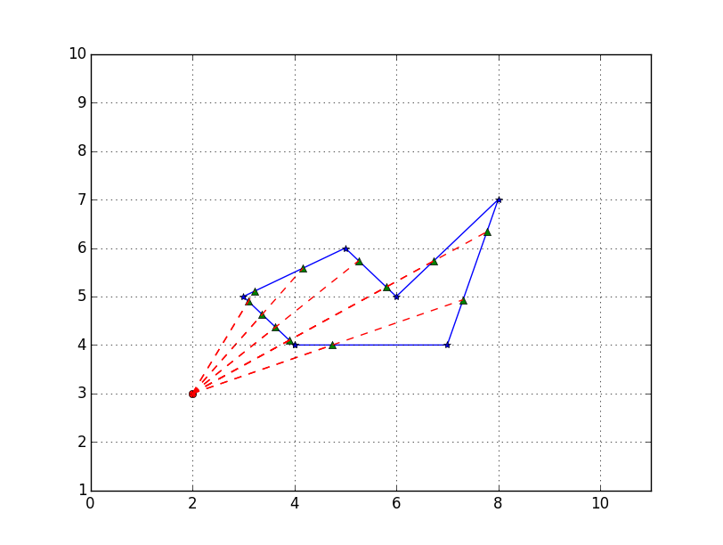
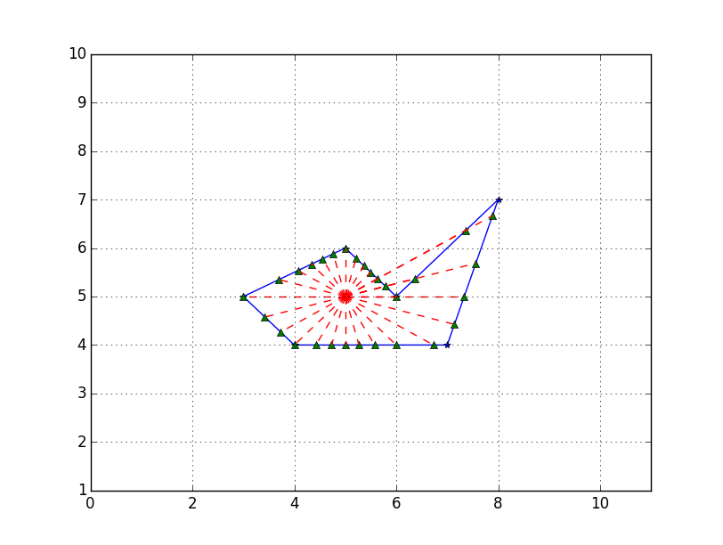

WARNING! MEN AT WORK!
Please excuse this webpage while it is being created.
PolyDist is a Python 3 code, aimed at engineers and physicists. It allows the user to define a point and a polygonal field in a 2D Cartesian coordinate system, rotate a ray around that point every x degrees, and then return the distances from the point to the intersection of its rays. Graphing and exporting distances is also supported.
For example, if you have a point (2,3) and a polygonal field with vertices at [(4,4), (7,4), (8,7), (6,5), (5,6), (3,5)], and you want to calculate the distances from (2,3) to the intersection of a ray with the field perimeter every 10 degrees, you would call the function like this:
python3 PolyDist.py
Main point coordinates: (2,3)
Vertices coordinates: [(4,4), (7,4), (8,7), (6,5), (5,6), (3,5)]
Angle of rotation: 10
If desired, you can then export the distances to an .xlsx spreadsheet, and/or show the graph in a new window:
As an additional example, let's reuse the same polygonal field, but choose a different point, (5,5), and rotate the ray every 15 degrees:
python3 PolyDist.py
Main point coordinates: (5,5)
Vertices coordinates: [(4,4), (7,4), (8,7), (6,5), (5,6), (3,5)]
Angle of rotation: 15
PolyDist started out as a Matlab (R) project in summer 2014. After writing the code in Matlab, I forked it into the Python 3 language a year later. The original Matlab code is still being maintained by another contributor. Several features of the Matlab code are making their way into PolyDist, along with some exciting innovations of our own!
PolyDist is written and maintained by Fred Barclay, an enthusiastic open-source user and coder.
Having trouble with PolyDist? Contact me via email and I'll help you figure it out! GPG/PGP signing/encryption is preferred but not required.
Discovered a bug or limitation? Unsure about something? Then hop on over to our Issues page and let me know!
If you think that a feature or bug squash needs to be implemented, and you can code it yourself, please open a pull request. If you CAN'T code it yourself, visit the Issues page and let me know all about it. You'll be glad you did!